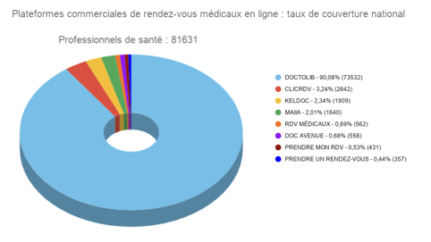

Plateformes en ligne de prise de RDV médicaux : enquête comparative

Sommaire
- La prise de rendez-vous médicaux en ligne
- Côté patients
- Étude comparative sur une noria de plateformes commerciales de rendez-vous
- Les non professionnels de santé dénombrés
- Doctolib, également leader pour les tarifs
- Satisfaction des utilisateurs médecins et professionnels de santé
- Une concentration sur un leader du rendez-vous médical en ligne et de la téléconsultation
- Utilisation des données patients
- Les exclus du numérique et du "prendre un rendez-vous"...Comment prendre rdv sur internet ?
- Comment les plateformes commerciales augmentent leur référencement et celui de leurs abonnés sur Google ?
- Existe-t-il des solutions alternatives aux plateformes commerciales de RDV médicaux ?
- Comment voir un médecin rapidement ?
- Contacts presse

La prise de rendez-vous médicaux en ligne a considérablement modifié la relation patient-médecin.
Désormais, de nombreuses plateformes numériques commerciales proposent leurs services aux médecins et à leurs patients avec pour objectif affiché de réduire les charges de secrétariat pour les médecins et de faciliter la prise de rendez-vous pour les patients.
- Côté patients, l’avantage majeur est de pouvoir trouver gratuitement et rapidement 24h/24 et 7j/7 un créneau de consultation, sans attendre les horaires d'ouverture du secrétariat.
- Côté médecins, l’avantage mis en avant est d'éviter les annulations de dernière minute grâce à l’envoi d’un SMS ou d’un mail de rappel du rendez-vous. Un autre avantage pour le patient est la simplicité d’utilisation des plateformes digitales commerciales ou non commerciales.
Dans le cadre de notre engagement contre le renoncement aux soins, nous avons décidé de mener une étude comparative sur les plateformes commerciales
L’étude n’a porté que sur les plateformes commerciales car d’une part, ce sont les plus nombreuses et d’autre part, elles occupent très régulièrement l’espace médiatique.
Notre partenaire egora.fr du groupe Global Média Santé a contribué à l’approche méthodologique globale et édite un article complémentaire avec notamment des interviews qu’il faut absolument découvrir.
Étude comparative sur une noria de plateformes commerciales de rendez-vous
Comment a été opérée la sélection des « lauréats » ?
Malgré la noria de plateformes commerciales, nous n’avons réalisé une étude comparative que sur les 8 plateformes qui comptent.
Les autres n’ont pas assez de clients (quelques dizaines référencés sur toute la France) pour espérer durer dans le temps.
Au delà des plateformes « confidentielles », nous avons éliminé de l’enquête les « Ovnis » qui se situent entre l’annuaire, la téléconsultation et la conciergerie.
La méthodologie suivante a été appliquée : 129 900 agendas de professionnels ont été passés au crible suite à une collecte manuelle de données effectuée par une équipe d’agents sous la direction du Dr Stéphane BACH entre le 1/3 et le 30/4/2020.
Les plateformes médicales non commerciales et les agendas en ligne individuels n’ont pas été inclus dans l’étude car ils ne peuvent pas être comparés à des plateformes commerciales.
N’ont été comptés qu’une fois et une seule les professionnels même si ils exercent en multi-sites (cabinets secondaires ou exercice mixte).
Des résultats qui confirment la position de leader de Doctolib
Actuellement, un acteur se détache nettement et les autres acteurs se partagent des miettes !
129 900 clients de plateformes ont été analysés dont ressortent 81631 professionnels de santé répartis entre 73532 professionnels de santé sur Doctolib et 8099 sur les 7 autres plateformes.

Les non professionnels de santé dénombrés sur les 8 plateformes étudiées ont été exclus des résultats et sont répartis comme suit :
- ostéopathes (non médecins, non kinésithérapeutes) 9455
- psychologues 4574
- diététiciens 1369
- hypnothérapeutes 1214
- sophrologues 637
- naturopathes 580
- chiropracteurs 356
- psychanalistes 280
- psychothérapeutes 100
Les 5 professions de santé les plus représentées sont :
- Médecins généralistes 18 760
- Chirurgiens-dentistes 10 782
- Kinésithérapeutes 6395
- Pédicures-podologues 4663
- Gynécologues 4083
52439 médecins sont inscrits sur des plateformes digitales commerciales.
Les 5 départements comptant le plus de professionnels de santé inscrits sur les plateformes en ligne sont :
- Paris 11 506
- Bouches-du-Rhône 4231
- Hauts de Seine 4457
- Gironde 2876
- Nord 3759
Doctolib, également leader pour les tarifs
Avec un tarif mensuel de 129 € TTC, Doctolib est également le leader pour les tarifs.
Les autres plateformes sont moins onéreuses :
- tarif identique de 69 € TTC pour PrendreMonRDV, Maiia, DocAvenue et RDVmédicaux.
- tarif de 49 € TTC pour ClicRDV mais auquel s’ajoute 0.10 €/SMS de rappel
- tarif de 40 € TTC pour Keldoc et tarif le plus bas pour PrendreUnRendezVous avec 15 € TTC.
Satisfaction des utilisateurs médecins et professionnels de santé
Un sondage téléphonique a été conduit entre le 4 et le 15 Juin sur un échantillon de 753 professionnels de santé clients des plateformes de rendez-vous.
De cette enquête satisfaction, il ressort cinq éléments réels de satisfaction pour une grande majorité de clients :
- la capacité à remplir l'agenda (88.7% de satisfaits et très satisfaits),
- l’envoi d'un SMS ou d'un mail de rappel (82.5% de satisfaits et très satisfaits),
- la possibilité de paramétrer l'agenda (82% de satisfaits et très satisfaits),
- la gestion des paramètres et de l'ergonomie du logiciel (79.15% de satisfaits et très satisfaits).
L’objectif de réduire les charges de secrétariat semble être atteint puisque 72.77% des professionnels déclarent être satisfaits d'avoir pu alléger la charge de la personne qui répond au téléphone pour la prise de rendez-vous. Seule ombre au tableau, les tarifs !
Bien qu’une légère majorité (56.57%) des clients interrogés se déclarent satisfaits des tarifs pratiqués (qui varient fortement d'une plateforme à l’autre comme vu précédemment), de nombreux professionnels ont exprimé leur mécontentement sur les réseaux sociaux et ont dénoncé le maintien des abonnements en plein confinement, période durant laquelle de nombreux professionnels de santé ont été contraints de fermer leur cabinet.
Enfin, les professionnels inscrits se disent satisfaits à 82% de la politique de protection des données personnelles mise en œuvre par leur plateforme.
Une concentration sur un leader du rendez-vous médical en ligne et de la téléconsultation
Le marché des plateformes de rendez-vous en ligne et de la téléconsultation s’est concentré sur Doctolib qui occupe une position dominante avec une part de marché de plus de 90%.
Cette plateforme est actuellement de loin la préférée des professionnels malgré une offre de services quasi identique à celle de ses concurrents pour un tarif plus élevé.
Utilisation des données patients
Existe-t-il des risques liés à la confidentialité des données médicales ou à leur exploitation à des fins commerciales. Que vont devenir toutes les données collectées par ces plateformes ?
Actuellement, les plateformes respectent leurs engagements de protection des données de santé des patients en accord avec la réglementation française et européenne (règlement général sur la protection des données ou RGPD).
Mais qu’en sera-t-il demain si une de ces sociétés commerciales étaient contrôlées par un GAFA ou un fonds d’investissement américain ?
Entre la gestion des calendriers des hôpitaux et les données médicales des patients des hôpitaux, ce sont des millions de données sensibles pour lesquelles le RGPD ne serait plus un bouclier face au CLOUD Act (Clarifying Lawful Overseas Use of Data Act), loi américaine qui oblige les entreprises technologiques américaines à donner aux autorités l'accès à leurs données dans le cadre d'une enquête, qu'elles soient situées sur des serveurs américains ou bien à l'étranger.
Les exclus du numérique et du "prendre un rendez-vous"...Comment prendre rdv sur internet ?
La fracture numérique touche 17% de la population selon l’INSEE !
Cette inégalité concerne principalement les personnes les plus âgées, les personnes moins diplômées et les ménages aux revenus modestes.
De plus, les personnes les âgées sont les plus consommatrices de soins. Or, de nombreux patients âgés n’utilisent pas du tout le numérique et n’y viendront sans doute jamais. Fort heureusement, le secrétariat téléphonique reste la premier moyen de prise de rendez-vous et notamment pour ces exclus du numérique.
Plateformes ou annuaires ?
Plusieurs professionnels de santé ont dénoncé et continuent à dénoncer un phénomène de captation de leur coordonnées alors qu’ils n’ont jamais donné leur consentement.
Les plateformes commerciales qui pratiquent cette activité d’annuaire ne répondent pas stricto sensu à la définition d’une plateforme de services.
Comment les plateformes commerciales augmentent leur référencement et celui de leurs abonnés sur Google ?
Le secret de l’excellent référencement naturel des plateformes est qu’elles encouragent vivement leurs utilisateurs à adhérer au service de Google My Business.
Ainsi, les professionnels inscrits sur ce service gratuit de Google s’affichent comme premier résultat de recherche dans leur ville sur des mots-clés tels que « docteur, dentiste, kinésithérapeute, dermatologue, ophtalmologue… ».
En configurant astucieusement Google My Business pour le compte de leurs abonnés, les plateformes commerciales ont vu leur référencement boosté sans bourse délier. Cette martingale est un cadeau royal de la part de Google…ou un cadeau empoisonné à terme !
Comment prendre rdv sur doctolib ?
Pour un patient ayant une connexion Internet et une adresse e-mail, il suffit de créer une compte sur le site doctolib.fr pour prendre rendez-vous.
Il est écrit sur le site que la création de compte patient se fait uniquement lors de la première prise de rendez-vous avec un professionnel de santé et que la page d'accueil du site est un moteur de recherche qui permet de trouver un praticien par son nom ou bien par sa spécialité et localité.
Les médecins et d’une manière générale les professionnels de santé titulaires d’un diplôme d’État sanctionnant plusieurs années d’études ne sont pas les seuls clients des plateformes et en particulier de Doctolib.
Ainsi, sont retrouvés parmi les professionnels de santé et des docteurs, des non-professionnels de santé : des ostéopathes non médecins, non kinésithérapeutes, des psychologues, des hypnothérapeutes, des naturopathes ou encore des chiropracteurs.
Les médecins d’une manière générale et l’Ordre des Médecins apprécient peu semble-t-il ce mélange des genres.
Existe-t-il des solutions alternatives aux plateformes commerciales de RDV médicaux ?
Les plateformes non commerciales gérées et conçues par des professionnels de santé se définissent comme une alternative aux plateformes commerciales même si elles n’offrent pas la même visibilité aux adhérents.
Concernant les délais de rendez-vous, aucune plateforme ne présente un avantage concurrentiel. Afin de mieux comprendre leurs objectifs et leur fonctionnement, nous avons échangé le 5/02 avec le Dr Vincent Rébeillé-Borgella, Secrétaire générale de l’Union Régionale des Professionnels de Santé (URPS) médecins libéraux de la région Auvergne-Rhône-Alpes.
Il est un des fondateurs de Medunion.fr, plateforme de prise de rendez-vous en ligne conçue par et pour les professionnels de santé et dont l’objectif affiché est clair : faire face à l'ubérisation de la médecine et au développement des plateformes privées.
Comment prendre rdv avec un médecin ?
Le site propose les mêmes services que les plateformes commerciales moyennant un abonnement mensuel de 30 euros, garanties déontologiques incluses.
Il est une véritable alternative sécurisée au développement des plateformes de RDV à but commercial en apportant la garantie du respect de l’éthique, du code de déontologie et du RGPD. L’Union Régionale des Professionnels de Santé (URPS) de la région Auvergne-Rhône-Alpes est également propriétaire d’un autre site Medunion Urgences dont la mise en ligne est imminente.
Cette plateforme a pour vocation de répondre à la problématique des urgences de ville dites consultations non programmées, aujourd’hui presque systématiquement orientées vers les urgences hospitalières.
Elle facilite la gestion de l’organisation de la permanence et de la continuité des soins non programmés et permet aux médecins régulateurs du SAMU du Rhône, en charge de la permanence libérale des soins, de proposer aux patients des rendez-vous en urgence sur des plages de consultation mises à disposition par les médecins libéraux en journée.
Comment voir un médecin rapidement ?
Une autre plateforme conçue et gérée par un médecin, Vitodoc.fr, propose d’obtenir rapidement et facilement un rendez-vous chez un médecin disponible pour les soins non programmés. Consulter un médecin rapidement en cas d’imprévu est au cœur du dispositif.
16.000 médecins proposent des consultations libres sur Vitodoc soit 80.000 créneaux par semaine à disposition des patients qui cherchent un médecin pour une urgence ressentie.
Vitodoc, gratuit pour le patient et pour le praticien, ne stocke aucune donnée de santé.
L’interview de son fondateur, le Dr Legrand, est consultable sur egora.fr à la rubrique Actus PRO.
Il existe aussi de nombreuses autres solutions comme les agendas en ligne intégrés dans les logiciels métiers, dispositif assez fréquent en ophtalmologie (Spelogic®, StudioVision®…) ou dans des solutions plus généralistes comme Axialone®.
Enfin, de plus en plus de praticiens optent pour une totale autonomie en créant leur propre agenda en ligne au sein de leur site web et en s’inscrivant gratuitement sur le service Google My Business.
Cette étude touche à sa fin et nous appelons nos lecteurs à consulter les résultats détaillés de cette enquête sur notre carte interactive.
Les plateformes commerciales de rendez-vous médicaux ont pris une place significative dans l’organisation des soins ce qui a pour effet de générer quelques inquiétudes chez les patients comme chez les médecins : position monopolistique de Doctolib, référencement payant sur Google (publicité Adwords) ou encore revente des données de santé des patients.
Une régulation plus stricte par les ordres professionnels est souhaitable afin de prévenir les éventuelles dérives liées à l’assouplissement récent des règles encadrant la publicité des médecins.
Et nous conclurons sous la forme d’une question qui nous interpelle :
Pourquoi l’annuaire santé de l’assurance maladie, ameli.fr, ne propose-t-il pas un agenda en ligne gratuit pour tous les professionnels de santé libéraux ?